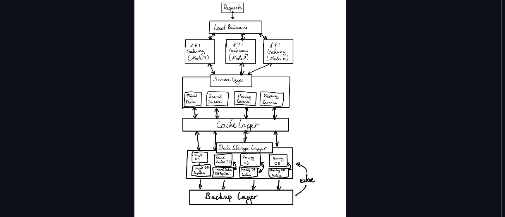
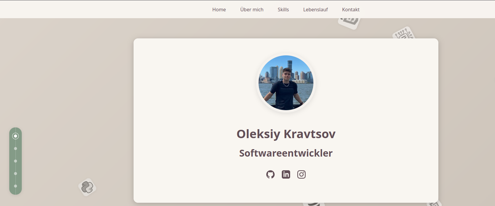
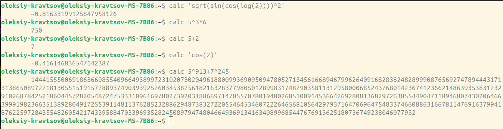

Meine Projekte

QGIS-Plugin für Avacon
In einem viermonatigen Teamprojekt entwickelte ich ein spezialisiertes Plugin für QGIS, das die Beeinflussung von Hochspannungsleitungen (HSP) auf Telekommunikationsleitungen (TK) berechnet. Dieses komplexe Tool ermöglicht:
- Präzise Berechnung von Beeinflussungsfaktoren zwischen HSP- und TK-Leitungen
- Visualisierung der Ergebnisse in der QGIS-Umgebung
- Effiziente Teamarbeit und Koordination während der gesamten Entwicklungsphase
- Integration in bestehende Avacon-Systeme
Python
QGIS
Team Project

Verteilte Chat-Bot Architektur
Entwicklung eines fortschrittlichen Chat-Bot-Systems mit:
- Server-basierte Nachrichtenverarbeitung
- Microservice-Architektur für parallele Anfragenverarbeitung
- Skalierbare und effiziente Kommunikationsstrukturen
Java
Microservices

Portfolio Website
Entwicklung meiner persönlichen Portfolio-Website mit modernem Design und responsiver Benutzeroberfläche:
- Modernes, responsives Design
- Optimierte Performance und Ladezeiten
- Barrierefreie Implementierung
- Cross-Browser Kompatibilität
HTML5
CSS3
JavaScript
Responsive Design

Wissenschaftlicher Taschenrechner
Implementierung eines wissenschaftlichen Taschenrechners mit erweiterten Funktionen:
- Komplexe mathematische Berechnungen
- Schnelle berechnung in der Shell
- Erweiterbare Architektur
C